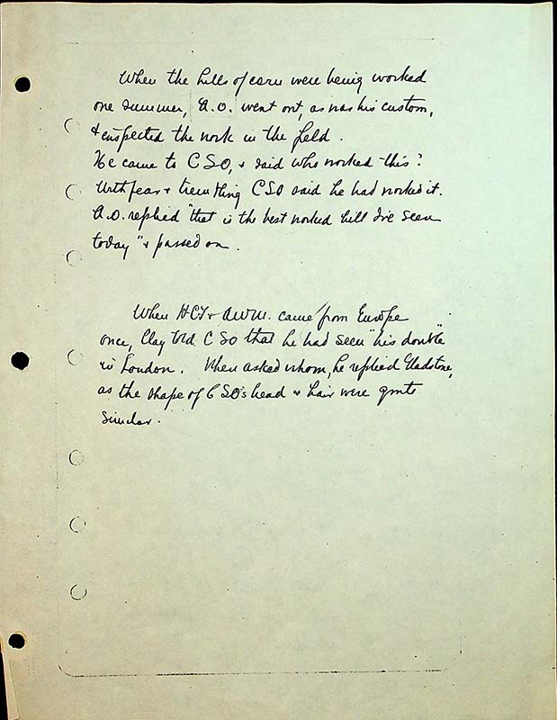

When the hills of corn were being worked one summer, A.O. went out, as was his custom, & inspected the work in the field.
He came to CSO, & said who worked this?
With fear and trembling CSO said he had worked it. A.O. replied “that is the best worked hill I’ve seen today” & passed on.
When HCF and AWM. came from Europe once, Clay told CSO that he had seen his double in London. When asked whom, he replied Gladstone, as the shape of CSO’s head and hair were quite similar.